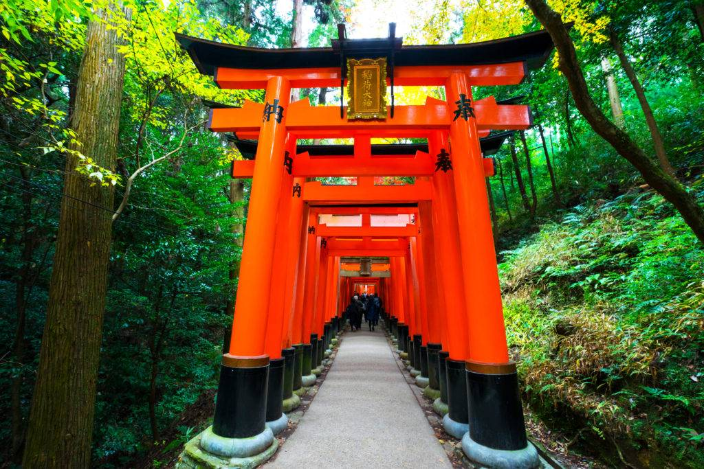

Top Attractions
Mount Fuji

Fushimi Inari Shrine

Arashiyama Bamboo Grove
Tokyo Skytree

Experience the perfect blend of ancient traditions and cutting-edge modernity, breathtaking natural landscapes, and exquisite cuisine.
Japan is an island nation in East Asia consisting of four main islands – Honshu, Hokkaido, Kyushu, and Shikoku – along with thousands of smaller islands. With a history spanning thousands of years, Japan has developed a unique cultural identity blending ancient traditions with ultramodern innovations.
From serene bamboo forests and ancient temples to neon-lit cityscapes and bullet trains, Japan offers visitors an incredible diversity of experiences. The country is known for its distinctive art forms, including ikebana (flower arrangement), origami, ukiyo-e woodblock prints, and calligraphy.
Japanese culture places strong emphasis on harmony, respect, and attention to detail. These values are evident in everything from its exquisite cuisine and meticulous gardens to its efficient public transportation and exceptional customer service. With distinct seasonal changes, each time of year offers a different perspective on this fascinating country.
Map of Japan showing its four main islands and major cities
Planning to visit Japan? Here are some useful Japanese phrases to help you communicate during your trip:
Phrase: Konnichiwa (こんにちは)
Meaning: Hello/Good afternoon
Phrase: Arigatō gozaimasu (ありがとうございます)
Meaning: Thank you very much
Phrase: Okaikei onegaishimasu (お会計お願いします)
Meaning: Bill, please
Phrase: Toire wa doko desu ka? (トイレはどこですか?)
Meaning: Where is the bathroom?
Phrase: Kore o kudasai (これをください)
Meaning: This one, please
Phrase: Sumimasen (すみません)
Meaning: Excuse me/I'm sorry
Japan celebrates numerous vibrant festivals (matsuri) throughout the year. Here are some you shouldn't miss:
Held annually in Sapporo, Hokkaido, this festival features spectacular snow and ice sculptures, some reaching several stories high. The week-long event attracts millions of visitors who enjoy illuminated displays, concerts, and local cuisine.
Not a single event but celebrated nationwide as cherry blossoms bloom from south to north. Japanese people gather in parks for hanami parties under the sakura trees, enjoying food, drinks, and the ephemeral beauty of the blossoms.
One of Japan's most famous festivals, held in Kyoto throughout July. The highlight is the grand procession of floats (Yamaboko Junko) on July 17th and 24th. Evening festivities include food stalls, traditional music, and the display of family heirlooms.
A Buddhist event honoring ancestral spirits who return to visit their families. Celebrated with bon-odori dances, lantern lighting, and offerings at family altars. The timing varies by region, but most areas observe it in mid-August.
Japan offers unique experiences in every season. Spring (March-May) brings the famous cherry blossoms, while autumn (September-November) offers stunning foliage colors. Summer (June-August) is festival season but can be hot and humid. Winter (December-February) is ideal for winter sports and onsen (hot spring) experiences. Consider that Golden Week (late April to early May), Obon (mid-August), and New Year are peak domestic travel periods with higher prices and crowds.
When using chopsticks, never pass food directly from your chopsticks to someone else's (resembles a funeral ritual) or stick them vertically in rice. Say "itadakimasu" before eating and "gochisōsama deshita" after finishing. Slurping noodles is considered polite and shows appreciation. Tipping is not customary in Japan and can even cause confusion—exceptional service is the standard. Many restaurants display plastic food models (sampuru) in their windows to help you order.
Japan's railway system is world-renowned for its efficiency and punctuality. Consider purchasing a Japan Rail Pass before your trip if you plan to travel extensively. The Shinkansen (bullet train) connects major cities at speeds up to 320 km/h. Public transportation in cities is extensive and usually has English signage. IC cards like Suica or PASMO are rechargeable smart cards that work on trains, buses, and in many convenience stores. Download Japan Transit Planner or Google Maps for navigating public transportation. Taxis are clean and reliable but relatively expensive.
Onsen (natural hot springs) are an essential Japanese experience, but come with specific etiquette. Always wash thoroughly at the washing stations before entering the bath. Tattoos may be prohibited in some establishments due to their association with yakuza (Japanese mafia). Small towels are used for modesty while walking around, but should not enter the water. Onsen are typically gender-segregated and require full nudity. If you're uncomfortable, look for private onsen options or ryokan (traditional inns) with in-room baths.